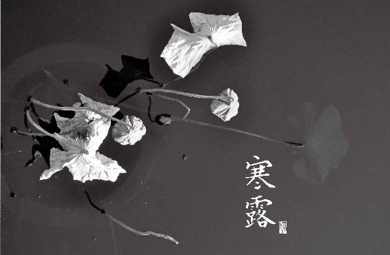
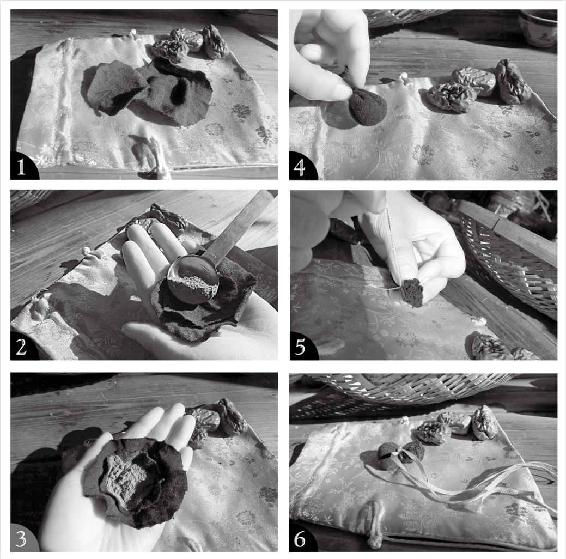
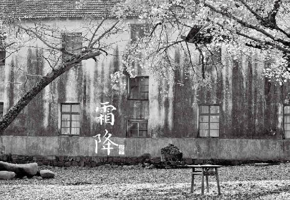

寒露，每年10月的8日或9日交寒露节气，这是深秋的开始。
寒露前后，一些朋友会有这样的体会：晚上睡不着，或者早早睡了，却在子夜醒来，辗转难眠，等到凌晨时分才能重新入睡。这就是金克木—秋气伤肝的一种具体表现。如果连续出现这样的状况，说明您有些肝血亏虚，更加要注意养肝血，尽快调理，才不会留下隐患。
20.寒露时节，露寒风冷，秋气伤肝，幸有“天香”
每年10月的8日或9日交寒露节气，这是深秋的开始。从寒露到立冬，是秋天的第三个月。这个月除了继续秋季养肺滋阴的主题外，养生重点要加一个养血（注意：这个时候要养的血不是普通的血，而是我们的肝血）。
按五行来分，肝属木。而秋天属金，秋风如同刀剑一般，一阵秋风吹过，树叶应声而落，这是自然界的金克木。对应人体来说，秋气伤人，也是金克木，伤的是肝。
寒露前后，一些朋友会有这样的体会：晚上睡不着，或者早早睡了，却在子夜醒来，辗转难眠，等到凌晨时分才能重新入睡。这就是金克木—秋气伤肝的一种具体表现。如果连续出现这样的状况，说明您有些肝血亏虚，更加要注意养肝血。
当我们说一个人血虚，也许他体检查指标并没有到贫血的程度。但从中医角度，却能看出有血虚的症状。中医讲究“治未病”，身体已经发出了信号，及时发现这些信号，尽快调理，才不会留下隐患。
根据血虚的不同表现，我们可以定位它影响的是哪个脏腑—是心还是肝。
如果心血虚，人会感觉心跳不安、睡觉不实、老做梦、头晕、记忆力减退。
肝血虚有哪些表现呢？视力减退、指甲变薄、手脚发麻，甚至腿脚有时会不由自主地抽动，女性经量少甚至闭经。现在很多人有干眼症，眼睛总是干涩，这也是肝血不足的表现。
那么，深秋的这一个月该如何养肝血呢？从寒露到霜降这15天为前半个月，以理血活血为主；从霜降到立冬这15天为后半个月，以暖血补血为主。
先说前半个月，也就是白露节气的15天，我们吃什么来调理肝血呢？恰好在这个季节，老天爷赐给我们一样宝贝—桂花。
桂花的香气，古人称之为“天香”，有舒肝理气、醒脾辟秽的功效。与其结缘，仅仅是闻一闻，都对我们的身体有好处。
21.寒露时节的食方：桂子暖香茶
世间香花很多，但从古时起，大家最爱以桂花入食。做点心要放点桂花来添香。一碗西湖藕粉，点上糖桂花，方算地道。皆因桂花不仅香，还有暖胃健胃的作用，特别是对肝气影响脾胃的情况很有效。
我们的脾胃不好，很多时候是受肝气影响，这种情况下，有的人会感觉吃东西后肚子胀，有的人一紧张就胃痛，有的人口气很重。这时，在点心里放点桂花，帮助消化甜腻之食，又能消除口气，使你吐气芬芳。
桂花也是养肺的，它是温养。一般来讲，花的药性以寒凉居多，但桂花与玫瑰一样是温性的。秋季人容易咳嗽，很多人一咳嗽就想到炖梨吃。但如果嗓子不疼只是发痒，痰色发白（这种是寒痰），就不可以用梨，倒是可以用桂花泡茶来喝，有化痰止咳喘的功效。
对于普通人来说，在深秋季节，桂花最棒的功效还是调养肝血。我们知道气郁、血寒都容易导致血瘀，而桂花既舒肝气，又散寒气，有通瘀的作用。
桂花更是女性的好伴侣，它可以帮助女性预防面部色斑，还能调理月经。
“中庭地白树栖鸦，冷露无声湿桂花。”人们常说秋菊耐寒，其实桂花也一样。寒露冷，秋风凉，难掩桂花天香。若你感觉秋风秋雨愁煞人，就泡一杯桂花茶身心共暖吧。
桂子暖香茶
原料：干桂花3克（新鲜的可以用5克左右）、 枸杞适量。
用法：沸水冲泡代茶饮。
功效：
① 暖血活血。
② 调理肝血虚—眼睛干涩、视力减退、指甲变薄、手脚发麻，甚至腿脚有时会不由自主地抽动，女性经量少甚至闭经。
③ 调理咳喘，清新口气。
允斌叮嘱
① 桂花可以用超市卖的干品，也可以用新鲜采摘的。注意刚摘的桂花要放1 ~ 2个小时，等里边的小虫爬出后，用淡盐水泡洗（花和盐的比例是5：1），才可以用。② 腹泻者勿饮。
③ 这个方子里加进了枸杞，可以增强补肝血的作用。一般人以为枸杞只是补肾的，其实它肝肾都补。枸杞是食物，用量不必精确到克。每次抓一小把来冲泡就可以了。泡过的枸杞，还可以吃掉，效果更好。

杨坤 韩妆小铺：谢谢大爱的陈老师，我这几天也在喝桂花枸杞茶，感觉效果不错，睡眠好多了。
轻舞飞扬赵洪燕：老师在河北卫视说了这个方法，我就配齐喝了这个茶，味道不错，对过敏干痒真的是太好了，谢谢老师！爱你哦。
冉冉妈妈：菊花枸杞茶和桂子暖香茶在秋天喝特别舒服，还有明目清新的感觉！
夏蝉：桂子暖香茶，食材就地取，放心。喜欢这种温香，喝着觉得是种悠闲的享受。
随缘：老师的食谱确实好用，去年喝了桂子暖香茶，冬天没那么怕冷了。

问：超市买的瓶装糖桂花可以吗？
允斌答：可以的，注意要买没有添加剂的。买干桂花也要特别注意避开熏过硫黄的。
问：为什么桂花会发霉呀？我就是摘了之后放了一会儿，让小虫爬出来，然后就把花和蜂蜜按5:1的比例混匀，放在玻璃瓶里密封保存了，这中间有错误或漏洞吗？
允斌答：很多可能的因素，玻璃瓶是否干净无菌无油，花是否有露水，是否下过雨，园艺工是否浇过水，等等。
问：桂子暖香茶3岁小孩也能喝吗？
允斌答：可以的。
问：老师你可以告诉我桂花茶月经时可以喝吗？老师没回我，我都不敢喝。
允斌答：月经不畅可以喝，否则暂停。
问：我在母乳期是否可以喝这个？
允斌答：可以的。
问：老师，错过了桂花饮，不想错过后一个，能说下暖血补血配方吗，好提前准备。
允斌答：错过了就现在补吧，深秋和初冬喝桂花饮都是很好的。
问：我好几个月没有来月经，医生说我血瘀，有什么办法吗？
允斌答：血瘀体质平时可以多吃活血的食物，喝桂花茶对活血通经很有帮助。
问：感冒了还能喝桂花暖香茶吗？
允斌答：风寒感冒可以的。
问：感冒能喝吗？
允斌答：可以。
那年花开月正圆问：老师，去年的桂花没喝完，今年还可以喝吗？还是喝新鲜的好些？
允斌答：今年新制的桂花干品香味会好些。
戴丹问：可不可以白天喝桂子暖香茶，晚上喝桂圆莲子茶？
允斌答：可以。
竹叶问：今年没买到新鲜的桂花用去年的可以吗？
允斌答：可以的。
22.重阳节，长生节，孝心节
一年中有两大传统保健节日，五月初五端午和九月初九重阳。端午节，也叫重五，是一个“卫生节”，注重的是防五毒。而重阳节，是“长生节”，讲究的是长寿养老。
重阳节又称重九，中国古人认为，九是数字里面最大的，是至阳的数字，九月初九是两个阳重在一块儿，所以叫重阳。阴阳是中医理论的基础。两个阳数重叠在一起的日子，当然不一般，所以古人十分重视重阳节，吃什么、做什么，都有专门的讲究。
重阳节也是老人节，我们该怎样向自己的爸爸妈妈、爷爷奶奶，外公、外婆等老人献上孝心呢？回家陪伴老人，按照传统风俗来过重阳节，就是给老人献上的健康礼物。
按传统，重阳养生要做三件事：1. 登高望远。古人春游多近水，秋游则登山，其中大有讲究；2. 佩戴茱萸。古时用的是茱萸枝叶，现在我们可以到药店购买其种子，装入香囊来佩戴； 3. 饮菊花酒。重阳前后菊花药性最佳，适合心血管疾病保健，古人喝菊花酒，我们可以用菊花配制一款孝养老人的消脂降压茶。
23.登高望远，畅饮“空气维生素”
前面讲了，一年中有两个重要的养生节—端午、重阳，其实还有两个重要的郊游节—三月初三、九月初九，两个日子正好相隔半年。三月初三上巳，是“迎青”节，因为此时大地开始复苏，天气暖和了，人们要去水边，戏水沐浴。九月初九重阳，是“辞青节”。深秋草木开始凋零，所以要辞青，辞别眼底绿色的风景。要到山上去，因为天气清明，能见度非常好，上山后可以看到很远的地方，感到心旷神怡。
登山时一定要选树木多的山，有瀑布的更好。这样的山里充满着植物的芳香精气，空气中富含有益健康的负离子。
负离子是空气净化剂。有森林的山里空气可以干净到几乎无菌，微尘也极少，全靠负离子的抗菌和净化作用。负离子更是人体的“空气维生素”，吸入负离子，就相当于吃了保健品。
负离子对人体主要有什么好处呢？
（1）增强身体的抗菌能力。在空气好的环境，养病好得快，特别是各种炎症和皮肤病。
（2）增强肺的吐纳功能。每一次呼吸，吸入的氧气更多，吐出的浊气也更多。对于哮喘有缓解作用。
（3）帮助消化。在森林山野待一天，人会感到更容易饿，吃饭也更香。
（4）镇定神经，缓解失眠。
（5）促进血中乳酸的代谢，消除疲劳感 。
最后这两点在秋季很有用，既可以帮助我们抵抗“秋乏”，使白天头脑清醒，又可以帮助我们在夜晚安睡，预防秋气伤肝引起的失眠。大自然给的东西就是这么奇妙，人体往哪边偏都能给你调回来。
古人不知道什么是负离子，但是他们就是体会到了重阳登山的好处。我们的老祖先，与大自然十分的亲近，能顺应天时地利。他们做事真是非常讲究，什么时候干什么事儿、去哪里，都是有想法的。
24.结缘茱萸（辟邪翁），远离病邪
“独在异乡为异客，每逢佳节倍思亲。遥知兄弟登高处，遍插茱萸少一人。”
多亏了王维这首脍炙人口的诗篇，使现代人还没忘记重阳节有佩戴茱萸的风俗。但今天很少有人这样做了。年轻人更是连“遍插茱萸”是怎么个插法也不知道了，真是可惜。
茱萸对于重阳节，就如同艾叶对于端午节那么重要。过重阳岂能没有茱萸呢？很多人不知茱萸为何物，以为很难找。其实，它从来没有远离过我们的生活，只是我们没有注意到它的存在。
茱萸有三种—吴茱萸、食茱萸、山茱萸，它们是完全不同的植物，却都是养生的好东西。
其中，大家最熟悉的是山茱萸。这名字也许陌生，实际上它是一味常用的中药，很多人吃过而不自知。山茱萸是老年人离不开的补品，这个我们后面细说。
食茱萸是食物，现在南方局部地方还在用，台湾用得比较多。食茱萸辛辣有香味，在古代，它是增添食物辣味的调料。蜀人嗜辣，但古代并不是用辣椒，辣椒是后来才传入中国的。川菜原来的三香—花椒、姜、茱萸，是没有辣椒的，只有食茱萸。唐代人写重阳节的吃食就有“汤饼茱萸香”的句子，吃汤面放点茱萸，就跟放了一勺红油辣椒那么香辣过瘾。
重阳节时，古人不仅佩戴茱萸，还要饮茱萸酒，这个用的也是食茱萸。怎么做呢？把食茱萸扔到酒里面，然后温酒。酒热以后，芳香四溢，喝下去胃里暖洋洋的。
那说到“遍插茱萸”，古人用的不是以上这两种茱萸，而是吴茱萸。它也是一味常用的中药，药店都能买到。重阳节佩戴的，是吴茱萸的枝叶，是为了辟病邪。重阳登高，如果秋风伤人，引起头痛，吴茱萸就是现成的良药。
吴茱萸煮水泡脚，夜夜睡得香
吴茱萸药性最强的部分是种子，入药就用这个部分。去药店买吴茱萸，买到的就是种子。吴茱萸有浓烈的香气，是入肝经的药，能温暖肝经，散寒助阳，燥湿的效果非常强。它非常的辛烈，需要炮制后，按医生给的配方才可以口服。我们自己在家里可以外用。吴茱萸外用效果很不错。我们可以用它煮水泡脚，有的人失眠，泡完以后会睡得很香。
吴茱萸调醋敷脚心，口疮、舌疮、牙痛一晚减轻
不管是口疮、舌疮还是牙龈肿痛，只要是口腔的炎症，都可以将吴茱萸碾成粉末，调一点醋，什么醋都可以，临睡前敷在脚心的涌泉穴上，拿胶布给贴牢了，第二天早上起来揭掉，牙就没那么痛了，贴个两三次就好了。有高血压的朋友，也可以试试这个方法，有辅助降压的作用。
吴茱萸泡脚治口腔炎症和降血压的原理，是引火下行，把身体头部的火往下引，它就不会在头上作怪了，炎症会退掉，血压高引起的头晕也会好转。
这是中医的高妙，头痛医脚，脚痛医头，就是远端治疗。
教孩子制作茱萸香囊敬老人
原料：吴茱萸3~6克（药店购买），碎布头一块，丝线一条。
做法：
① 将布头剪成圆形。为了结实耐用，我用的是双层布，剪一大一小两个圆形，然后重叠放在一起。
② 把吴茱萸放在布头中间。药店买来的是吴茱萸的种子，呈颗粒状，直接使用就可以。我买时让药店给打成粉末了，为的是用完香包之后把药粉取出来，还有妙用。
③ 把布头包起来，手巧的人可以像包包子和烧卖那样捏出小褶。
④ 挂在胸前或戴在手腕上都可以。
用法：重阳节前后外出登山游玩时使用，不时放在鼻端嗅闻，可以防病毒，散风寒，缓解受风头痛。
允斌叮嘱
① 吴茱萸入药有禁忌，不可自行食用，一定要遵医嘱。自己用的话，只可以外用。
② 香包戴过之后，如果不用了，可以把里面的吴茱萸取出来外用，泡脚或者调醋敷脚心，效果上节中已有介绍。
③ 吴茱萸有三个品种，品质优劣不同，市场上还有一些伪品，买的时候一定要注意闻，气味芳香浓郁的才是好的吴茱萸。


玲玲2013女郎：说到睡眠，我每次例假前都失眠、上火，这次我提前敷了吴茱萸，开始调醋敷的，后来记得您在《百科全说》里说的是调香油，我发现调香油似乎对我更有用些。不仅改善了例假前腰痛、上火的症状，最重要的是一直困扰我的失眠，似乎好了很多，不会半夜惊醒，几小时睡不着了。
兰的草：吴茱萸贴脚下涌泉穴治口腔溃疡效果特别好。我婶婶摔伤，牙齿将口腔扎破，不能进水吃东西，疼得厉害。用吴茱萸调醋贴涌泉穴后，两天后口腔疼痛减轻，五天后基本好了，七天后彻底好了。
清：这简直是家中必备，只要是感觉到虚火，或者有可能上火的时候，都会贴，家里男女老少都可以贴，效果相当好。
顺时生活会8群读者：吴茱萸敷在涌泉穴上引火下行、排毒，按老师说的去药房买吴茱萸打粉，回家后用香油拌匀，晚上睡觉前敷在涌泉穴上。这两年来我也不怎么长口腔溃疡了，也不怎么上火了，身体明显好了很多。
问：陈老师您好，按照您说的治疗口腔溃疡的方法治疗了3天，已基本痊愈，很惊喜。这病已困扰我很长时间，去看病时大夫也说挺难治愈，非常感谢，另我还需继续用药巩固吗？
允斌答：可以连贴7天断病根，以后不容易复发。
copy（304枪钉固特五金）问：老师，春分要到了，广东的回暖天也要到了，又是气温多变季节，可以坚持给孩子贴茱萸足贴吗？去年买了两盒，已贴完，孩子说还要贴。孩子4岁半了，这个季节贴对预防咳嗽，促进长高有帮助吗？
允斌答：可以继续贴，对咳嗽有帮助。长高应该没有直接效果。
25.不能让家里老人的身体再“漏”了
如果你家里有六味地黄丸，请拿出来看看药盒上印的成分表，一共六味药，第一个是“熟地”，第二个就是“山茱萸”。
不仅六味地黄丸，所有的地黄丸系列药，都有地黄配山萸肉。地黄补血养阴，山萸肉补益精血。
前面讲过，茱萸分三种，而我们用得最多的其实就是这个山茱萸。山茱萸是很常用的中药，它的中药名称有两个，如果带着籽就叫山茱萸，去了籽就叫山萸肉。它是一味补肝肾的好药。
山茱萸有一个特点，如果你去查历代的药书，有的把它归在滋阴药里面，有的把它归在助阳药中，那它到底滋阴还是助阳呢？实际上它是滋阴又助阳。入冬的时候，就给老年人天天喝这个， 这叫作平补阴阳。凡是肾虚的人，无论阳虚阴虚，都少不了山萸肉。
有人问我，平补阴阳的东西还有枸杞、冬虫夏草。那山茱萸跟这两样相比较，它的功效是强还是弱一些呀？
我说，它们的作用点不一样。枸杞偏补肝肾之阴。冬虫夏草偏补肺阴。而山茱萸的味道有点酸，还有点涩，属于中医所说的酸涩之品，它收敛固涩的作用相当强，就是帮助我们把精气收藏起来，这就跟枸杞有很大区别了。凡是精气不固，就需要用到固涩的药。
精气不固是什么概念呢？它体现在一个“漏”字上。比如夜尿频多、虚汗不断、男性遗精、女性崩漏，这些都是“漏”，是精气不固的表现。这些情况都可以用到山茱萸。
山萸肉特别适合肝虚肾虚的老年人。比如老年人头晕目眩、耳鸣耳聋、腰腿酸软，或是五更泻—天不亮拉肚子。而小孩子不可以多吃，因为收敛的作用太强了。如果小孩经常有点儿外感积食，再一收，那就不好了。老年人体质比较虚，就需要收，固涩住，让精气不会散掉。
26.献给老人的食方：山茱萸强筋壮骨汤
重阳之后的深秋和冬季，如果家里有年纪大的老人，不妨经常用山茱萸给他们煲汤喝，补补肝肾，强筋壮骨。
山茱萸强筋壮骨汤
原料：山萸肉、熟地、淮山药、茯苓各30克（四味药材均可在药店购买到）、牛骨髓半斤到1斤（250~500克）。
做法：将四味药材用冷水泡30分钟，然后用纱布包包起，放入锅中，加水煮开，放入牛骨髓，一起煲1个小时。
功效：益精血，壮骨髓，补肝肾，强筋壮骨。老年人喝这个汤，腰腿就有力了，不容易酸软、疼痛。
允斌叮嘱
① 牛骨髓可去超市买，一条一条的牛骨髓，一般装在盒里，放在冰柜里出售。猪骨髓也可以，但一定不要骨头，骨头一般不适宜用来煲补药，因为药性会被吸到骨头里面。
② 感冒、痰多、咳嗽，凡是有外感急症时不要喝。进补一定是在身体没有急症的时候时进行。
③ 这汤适合老年人补虚，秋冬季年轻人和小孩适量喝也不错，特别是脾虚、面黄肌瘦或是遗尿的孩子喝有补益作用，但如果孩子积食、痰多不要喝。

暄：爸爸年近70，晚间起夜达6次之多，睡眠受影响，人的精神状态也不好，很瘦。用了山茱萸壮骨汤后晚间起夜就一两次了。
丁如君：我的婆婆70多岁，以前每晚总要起夜10多次，总说睡不好。我看了书里描述的症状，我家婆婆大部分都有，因此赶紧给她弄这道汤水，喝了几次后婆婆开心地说好多了。慢慢地睡眠好了，不用晚上去厕所，真的是解决了她的大麻烦。
顺时生活会2群读者：我的腰连续两年扭伤过，这几年都很注意，但是腰也不是很舒服。从去年冬天开始，感觉腰部很凉，有时还围个腰带。前些天看老师的养生日历，书中提示喝强筋壮骨汤，可以益精血、壮骨髓、强筋壮骨。熬好以后，感觉味道又酸又苦，到了第二天，明显感觉腰疼症状减轻很多，感谢陈老师！

问：我婆婆腿脚不好，家住五楼，没电梯，爬不动楼梯，需要补钙，那吃点儿什么好呢？
允斌答：老年人缺钙，不是因为她吃的钙不够，是因为吸收不好了，所以要健脾胃，这是要点。还有就是要补肝肾，这里推荐的山茱萸强筋壮骨汤是很适合她的。
27.结缘菊花（延寿客），保心血管无恙
“黄花开也近重阳”，黄花指的是菊花，人们一看到菊花开放，就知道重阳马上要到了。重阳节是在霜降的前后，跟霜降形影不离，而采摘药用的菊花，就是在重阳到霜降之际。重阳时候的菊花开得最好，药性也最佳，正是应时令的好药。
唐代孟浩然的诗里说得好，“待到重阳日，还来就菊花”。古时候讲究在重阳节赏菊花，还要喝菊花酒。
菊花茶人们经常喝，而菊花泡酒现在不多见 。
菊花酒有两种做法：一种是用酒泡菊花；一种是在酿制酒的时候加入菊花，这样酒就会取得菊花的药性，相对没有那么热性，喝起来也很舒服。可惜现在没多少人有耐心去酿制它了。
重阳节佩戴的茱萸，古人称为“辟邪翁”。而菊花称作“延寿客”。因为菊花对心血管特别好，用好了可以延年益寿。
不要有事没事都去喝菊花茶
很多人日常喜欢泡菊花茶喝，认为可以下火。这个是不对的。如果是体质偏寒的人，不要常年喝单一味的菊花。菊花是凉性的，它凉胃，如果脾胃比较寒的人经常喝，胃气就被败掉了，吃东西就会没胃口。菊花茶要在身体有事儿的时候才喝。
菊花分三种：白菊花、黄菊花、野菊花，药效不一样
白菊花：清肝明目（预防高血压、心血管疾病）
黄菊花：疏风散热（缓解头晕目眩、眼睛发红）
野菊花：清热解毒（调理皮肤长疖、粉刺）
如果把这三样菊花的寒凉性排队，野菊花一定是最寒凉的；白菊花相对来讲，比较平和。
商店里卖菊花，一般按产地分，有四大名菊—亳菊、滁菊、贡菊、杭菊。杭菊产于浙江，以杭州为集散地，故名杭菊。其他三种名菊，都产于安徽。还有一个怀菊，产于河南，是四大怀药之一，一般入药使用。
应该选择哪一种菊花呢？四大名菊，基本上全是白菊花，除了杭菊。四大名菊里，唯独杭菊可以分黄白。所以有时候配方里用到杭菊时会加个白字—杭白菊，以此与杭菊中的黄菊来区分。怀菊花也分黄白两种颜色，有怀小白菊、怀大白菊和怀黄菊。
四大名菊中，杭白菊是比较常见的，而亳菊、滁菊、贡菊，相对产量比较少，比较名贵。
贡菊和杭白菊有什么区别
杭白菊的蒂没贡菊那么大，那么绿，也没有贡菊那么完整的花朵；而贡菊团在一起，很紧致，花朵看起来很漂亮。
为什么叫贡菊？因为它确实好看，而且泡出来的汤色也漂亮。但从功效上来说，与杭白菊是大同小异。
白菊花适合老年人，黄菊花适合中青年人；野菊花凉性最强，一般用来入药
我们想要清肝明目，用哪一种白菊花都可以。平时保健喝菊花茶，白菊花最适合老年人。那黄菊花适合什么人呢？适合中青年人。如果您经常风热感冒，可以用黄菊来疏风散热。
除了可以清风热外，黄菊花最好的用途是解除风热感冒引起的头晕目眩，因为头晕就是风在作怪。还有熬夜后眼睛发红，这种情况下就用黄菊花。
有人问我：你不是说明目要用白菊花吗，黄菊花也可以吗？
我说，白菊花的作用叫明目，老人喝了以后，眼睛不容易干涩，视力不容易减退。而熬夜以后眼睛发红是肝火上炎，我们就要用黄菊花。
如果您是经常坐在电脑前眼睛会很干涩的人，要用白菊花；有红血丝了，再用黄菊花。中医认为，久视伤血，而菊花有通利血脉的效果。当它通利血脉的时候，就是加快我们眼睛的供血；供血足了以后，才会有眼泪分泌。
野菊花的凉性是最强的，所以日常泡茶一般不用，只用来入药。野菊花入药，清热解毒的作用特别好。解什么样的毒呢？咽喉突然肿痛、肿大，扁桃腺发炎了，或者是皮肤长粉刺、长疖子了，这时候，用野菊花泡水喝，效果就比较明显。
不管是白菊、黄菊还是野菊，菊花入药都有个特点，就是作用于人体的上部，特别是头部和眼睛。这是因为菊花有一个重要的功效，叫作升举清阳。人体内有一个气的循环，清气要往上升，浊气要往下降，这叫作气机平衡。如果清气不往上升，人的头部会缺乏能量，就会觉得发晕。有的人患美尼尔氏综合征，甚至出门吹个风就头晕，起不来床，这都属于清气不往上升的症状，那用菊花就正好，而且最好是用黄菊花。
人们用枸杞泡茶，常爱配菊花。这个搭配就很有道理，因为枸杞要配菊花，明目的功效才好。菊花升举清阳，可以引药性上行到眼睛。

问：平常为了滋养眼睛，我们可能会在菊花茶里放一些枸杞，枸杞可不可以搭配菊花呢？或者是枸杞搭配一些别的东西一起泡水？
允斌答：这个当然可以了，因为枸杞和白菊花就是一绝配，枸杞是平补阴阳的，补肝肾的。很多人以为它只补肾，其实它也补肝，而菊花是清肝的。一个清肝，一个补肝，两个结合在一起，就是帮助肝脏，既把里面的毒给清了，又给它补上去了，所以是特别保肝的一道茶。中药地黄丸系列里有一个杞菊地黄丸，就用到了这个绝配组合。
问：大枣和枸杞呢？
允斌答：大枣和枸杞也是可以搭配在一起泡水喝的。但如果是年轻人的话，这么喝容易生内热，因为枣是热性的，而枸杞平补阴阳，也是很滋补的，两个加在一起就容易把大枣的热性给补上来，容易生内热。
降压食方：白菊饮
很多人以为菊花只是清热的，清肝明目。实际上它还有通利血脉的功效。如果家里老人有心血管疾病，我特别推荐用菊花，而且是白菊花。
有一个验方—白菊饮非常好，是经过很多病例检验的，就是用白菊花给老年人降血压。
降压食方：白菊饮
原料：白菊花1斤（500克）。
做法：
① 把白菊花用水泡一晚。
② 加水煮开， 30分钟后倒出来；再加水，再煮30分钟，倒出来。
③ 把这两次的水加在一起，可以稍微浓缩它一下。如果您觉得水不多，不浓缩也行，放在冰箱，分10天喝完。
允斌叮嘱
1斤菊花煎出来的水，大约喝上10天就可以了。每天分几次喝，特别对肝阳上亢型的高血压降压效果非常好，还很平和。老人血压高，平时就喝这个，其他的降压手段照样用，不影响。有冠心病的老人，也可以把这个当作保健的饮品来喝。
治风热感冒的食方：桑叶黄菊饮
原料：桑叶10克、黄菊花10克。
做法：把桑叶和黄菊花放入水杯中，开水冲泡，10分钟后饮用。可加适量蜂蜜调味。
桑叶和菊花气味轻薄，容易散发，冲泡时，在等待茶水变温之前，可利用蒸气熏眼或口鼻，可以增强效果。长期用桑叶黄菊饮熏蒸眼睛，对预防老花眼还有帮助。另外，它可疏风散热，治疗风热感冒，缓解高血压头晕，调理熬夜后眼睛发红。
治咽喉肿痛的食方：罗汉野菊饮
原料：罗汉果1个，野菊花30克（药店有售）。
做法：
① 罗汉果掰开成几块，连核一起放入锅内，加水煮开，转小火煲30分钟。
② 放入野菊花，再煮10分钟关火。
③ 将药汁滤出，然后放清水，再煮30分钟。
④ 两次的药汁可以先后服用，也可以合在一起，分两三次服用。
功效：清热解毒，消炎，调理咽喉肿痛、面部粉刺，缓解便秘。
允斌叮嘱
罗汉果一定要煮到汤色深红，才能充分析出药性。这款茶饮苦中回甘，味道比较浓。
血压、血脂都高的食方：降压降脂减肥饮
前面已介绍了降压的白菊饮小药茶，单一味，是单纯降血压的。但家里的老人家，有时候是血压高，血脂也高，怎么调理呢？
高血脂跟高血压往往如影随形，对于家中老人（可能他们还稍微有一点肥胖）的这种情况，就用菊花给他们配一道“降压降脂减肥饮”。
降压降脂减肥饮
原料：山楂30克、白菊花6克、甘草6克。
做法：把上述三种药材冷水下锅，煮开后转小火再煮15分钟。
记住，这道茶里的甘草是不可或缺的，不只是为了平衡山楂的酸味，它是有重要作用的。山楂是破气又破血的，但要降血脂还真离不了它，降血脂的药方里面，十之八九我们要用到山楂。但老年人用山楂，最好不要单用，容易伤气血。这时加入一点补气的甘草人就舒服了。
问：这个里面能否放一点绿茶呢？
允斌答：如果有轻微内热是可以的，但一定只放一点点，否则影响山楂的效果。
金叶子问：这几天感冒、鼻塞、扁桃体炎，我泡了菊花绿茶饮。看了这个视频后，发觉我的菊花买错了，买了杭白菊，明天把它换成野菊花。陈老师，我已经是感冒中，还需要买桑叶一起泡吗？
允斌答： 若是扁桃腺肿大很厉害是可以用野菊花的。桑叶是需要的。

霜降，是在每年10月的23日或24日。过完这个节气就渐渐过渡到了冬天的萧瑟景象， 昆虫都“闭关”了，河水枯落，人体内就反映为缺乏水液滋养，特别是血液。
此时，第一是减少户外运动，特别是剧烈运动，因为我们要准备进入冬天的静养阶段；第二就是继续深秋养肝血的工作。
28.霜降时节，“昆虫皆闭关”，养好肝血，准备猫冬
霜降开始于每年公历10月的23日或24日。这个节气是秋天的尾声，霜降节气15天一过，就是立冬。
霜降日秋色最浓，过完这个节气就渐渐到了冬天的萧瑟景象，这15天的季节变换是十分明显的。前人早就观察到，霜降有三个季节特征：河流进入枯水期，草木经霜后变色摇落，虫蛇蛰伏。
北宋文学家黄庭坚写过一首诗，生动地描写了霜降的三个季节特征：
霜降水反壑，风落木归山。 冉冉岁华晚，昆虫皆闭关。
人与天地是相通的，自然界的变换在人体也有所反映。
首先，昆虫都“闭关”了，人也应该避入室内休息。我们的祖先在两千多年前就开始这样做了。“霜始降，则百工休。”每当霜降来临，初霜生成，秋风冻人，人们就会停止一切室外的劳作，准备开始“猫冬”。
其次，河水枯落，在人体内就反应为缺乏水液滋养，特别是血液。为何讲究秋冬养阴？阴就是人体的水液，也包括血液。养阴的一个主要任务就是养血。
霜降的养生重点，就是为即将到来的冬天做准备。第一是减少户外运动，特别是剧烈运动，因为我们要准备进入冬天的静养阶段；第二就是继续深秋养肝血的工作。
在深秋的前半月，养肝血的重点是活血理血；在后半月，养肝血的重点则是暖血补血。
养好了肝，到11月7日左右立冬，就要开始补肾的工作了。
29.霜降时节养肝血的食方：双莲墨鱼汤
霜降时节，特别注意不要熬夜。熬夜极伤肝血。肝血不足，夜里更难入睡，形成恶性循环。熬夜伤肝血后，还容易引起一系列后遗症，比如脾气急躁、上火、眼睛发红、皮肤干燥、便秘等。
一旦熬夜伤了肝血，第二天要赶紧从饮食上弥补。而墨鱼汤就是养肝血的宝贝。
从霜降到立冬，就算不熬夜，我们也要注意滋养肝血，可以常喝双莲墨鱼汤。这道汤里，墨鱼是养肝血的上品，配上莲藕和莲子，滋补的效果更佳。
双莲墨鱼汤
原料：墨鱼1~2只、肥猪肉1小块、莲藕半斤（250克）、莲子20粒、枸杞20粒、陈皮半个（或10~20克）、生姜（带皮）3片、盐少许。
做法：
① 提前几小时用冷水泡发墨鱼干和莲子（如果是一年内的淡晒墨鱼干和手工剥皮鲜莲子则不需要泡发）。
② 全部原料一起放入锅内，加冷水，大火烧开后，转小火炖40 ~ 60分钟。
③ 加少许盐，关火。
④ 起锅后将墨鱼骨取出。
允斌叮嘱
① 用墨鱼干的效果比新鲜墨鱼好。墨鱼干在超市可以买到，有大有小，大的较贵，小的便宜。我喜欢买小的墨鱼干，大约是巴掌大的，一只正好是适合一个人的量。墨鱼有不同品种，选传统品种的滋补墨鱼效果更好一些。
② 墨鱼干分淡晒（不加盐）、半淡晒（加盐）、盐晒（加很多盐）三种，淡晒的好处是补血功效更佳（因为“咸伤血”），加盐晒的好处是可以保存好几年。如果用盐晒的墨鱼干，要多泡洗几遍，汤里少放或不放盐。
③ 墨鱼骨要一起炖才能做到阴阳平衡。墨鱼肉是发物，配上墨鱼骨就不那么发了。炖好后，将墨鱼骨取出来，晒干，可以做应急的外用药，还可以用来擦牙，使牙齿洁白。
④ 肥肉是一定要放的，墨鱼要见荤油才不会苦。用猪油也可以。不吃猪肉，可以用鸡肉代替。
⑤ 每天或隔一两天喝一次，半个月后效果明显。
在这道汤里，各种食材所起的作用：
肥猪肉：润燥补水。
墨鱼：养血滋阴，益胃补气。
莲藕：凉血，活血。
陈皮：理气，解油腻。
莲子：健脾，补心气。
枸杞：滋肝补肾，明目。
将它们合起来，这道汤的功效主要是养肝血、补心脾、滋阴润燥。其中的莲子止泻，莲藕通便，二者搭配起来就比较平和，适合全家人食用。另外，这道汤只要有荤油就好，鸡肉、肥牛肉也是可以的。
禁忌：皮肤过敏、湿疹及痛风病人不要多吃墨鱼。

拐角上的云：照着做了一次这道汤，真的很好喝，继续！
飞扬成一道彩虹：下午炖了喝，真香。
丁如君：对于手脚冰冷的人而言，深秋容易整夜失眠，很难受，自从跟随老师顺时生活，缓解了我的失眠问题，偶尔熬夜也不再担心身体透支。因为这道汤不仅好香、好喝，而且能缓解熬夜失眠带来的伤害。
321：谢谢陈老师，由于工作总对着电脑，喝了这个汤，眼睛没有那么难受了，谢谢！
梅zi：昨天炖了墨鱼双莲汤，真的太美味了，一直以来困扰我的耳鸣、听力下降，昨天竟然一下缓解很多，真的效果非凡啊！感谢老师让大家认识和品尝到这么好的药膳，带给大家健康的生活和美的享受！期待老师对墨鱼更多的讲解。
熊瑛：一碗双莲墨鱼汤还没喝完，后背肾俞、腿部胃经、腿内侧、腹股沟就开始出现反应了。我还找出了大腿内侧肝经上的一个堵点，两膝关节嗖嗖往外冒凉风，吸气也顺畅了。太感谢陈老师了！
S&M：上次老师说的双莲墨鱼汤效果好好，我之前睡觉醒来会觉得口苦，喝了这款汤后口也不苦了，觉也睡得香了。感谢老师的良方靓汤！
燕子：感恩陈老师！老师的几本书《回家吃饭的智慧》《吃法决定活法》《茶包小偏方》我都买了，并且认真看了。结合老师的音频调理身体，一定会获得更健康的身体。墨鱼汤好喝也很补，吃了半个多月，身体感觉暖和多了。
Vera：去年开始吃的，熬夜必备呀。我一休息不好，第二天就会阴虚火旺，牙疼，眼睛疼。早上吃一条清炖墨鱼，再配上乌梅汤，到了中午头痛、牙痛就慢慢好了，眼睛也变亮了。
JANE將近_深圳：我超爱喝此汤，超好喝。喝了双莲墨鱼汤，肤色变润了，月牙也出來了。
钱艳丽：工作原因难免熬夜，没有喝之前，每次熬夜第二天起来，脸色都非常不好看，而且人也感觉不舒服，浑身没劲。现在每次熬夜早起都会喝，喝完整个人很舒服。
费永梅：双莲墨鱼汤，喝了以后人整体感觉比较清爽。
法图麦&杨：墨鱼补养肝血最益妇人，莲子补心补脾，莲藕清热去瘀，与墨鱼结合，滋补效果更上一层楼。墨鱼汤味鲜，双莲绵软。滋阴养血不上火，扫尽口鼻干痒眼发涩等不适，深得我爱。
一根葱：陈老师，自从喝了你推荐的墨鱼汤，我整个人精神都好了，腹部也不胀气了，很舒服。感恩老师！
燕姐：手划伤流血了，刮了墨鱼骨粉撒在伤口上，立刻止血了。
问：莲藕清热凉血，请问阳虚的人能吃吗？
允斌答：可以的，莲藕也健脾胃。
问：陈老师，煮墨鱼汤的时候，泡墨鱼干的水要一起放进去煮吗？还是另外用水呢？
允斌答：如果墨鱼是洗干净再泡的，那么泡过的水也可以放进去一起煮。
问：允斌老师能推荐素食者这个节气适合吃的补肝血的食物吗？素食者也不想错过您说的补肝血的机会。
允斌答：可以吃枣和西梅。
问：请问允斌老师这道汤里生姜是不带皮的吧？因为墨鱼是寒性的。
允斌答：要带皮。姜皮的主要作用是止汗，减少姜肉的发汗功效。
问：我秋天身上痒，一抓有风团但是过会儿就消，能喝这个汤吗？
允斌答：可以。
问：高血压、血脂高之类的人是否可以喝？或者是否可以少量喝？谢谢！
允斌答：可以喝的。
问：今天买了墨鱼干，用水泡后，在它的肚子里面，有黑色的一层，请问该留还是去掉？
允斌答：留下。
Nuan问：老师，阴虚内热很重，不放生姜，多放陈皮可以吗？喝了有姜的汤，喉咙就长东西，会燥热。
允斌答：可以去掉生姜。
悉数沉淀问：老师你好，早上喝了银耳，再喝墨鱼汤时，我在里面加了面粉，这样喝起来比较扛饿，不知这样行吗？
允斌答：可以的。
30.秋季要冻下不冻上
说到如何保养我们的身体，古人早就代代相传了“春捂秋冻” “捂三冻九”这些大道至简的道理。但是，有多少人知道春捂是捂哪里？秋冻是冻哪里呢？
春天的捂，叫捂下不捂上。就是说春天天热起来后，阳光一晒，觉得出汗了，要减衣服，这时，棉袄可以脱，但厚的棉毛裤、棉鞋是暂时不能脱的。
因为这时候虽然天气比较暖和，但地气还很寒。特别是北方，地还冻着呢！地气还没有晒暖，正是乍暖还寒之时，所以要是为了好看盲目减衣反受凉气之害。
那秋天呢，我们就要反过来了，不能凉着上身（当然，如果你的腿觉得凉了，那一定要穿好了，别冻着）。初秋的时候，有点小凉意了，请马上加衣，不是说多穿一条秋裤，而是一定请披上一件外套。
如果不注意这个小细节，我们就容易得呼吸道的病。为什么呢？秋天的地气其实还很暖呢，而秋风从上面吹来，已经带着凉意了。
中医讲，风为阳邪，上先受之。也就是说，风是一个阳性的病邪，它侵袭人体是从上半身开始。所以，秋风一起，我们一定要先穿上外套，特别要注意捂住背。
不管是捂上还是捂下，中老年人完全可以多捂一点，只要别出汗（日常生活中不能老是出汗的，因为中医认为血汗同源，出汗等于出血）。如果出汗了，就证明捂多了，这是不可取的。年龄大的人，只要在不出汗的情况下，捂得稍微多一点，那对身体是很好的养护。
31.一日之内夜不食姜，一年之内秋不食姜
对于许多家庭来说，姜就像一个朝夕相处的“家人”，舍不得也是离不开，而民间对它也有很多赞誉，像什么“冬吃萝卜夏吃姜，不要医生开处方”等。有人说，男人不能缺姜；有人认为，胃寒、觉得冷的时候吃姜暖和。还有人听说姜好，早上起来一定要吃姜，春夏秋冬都吃……
姜虽然非常好，但古人却说“秋不食姜”。 另外，有人认为一天之内什么时候都可以吃姜，这也是不对的，因为“早吃姜补药汤，晚吃姜见阎王”，应该“ 下床吃姜，上床吃萝卜”。
现在的人，身体容易生内寒，而吃姜能很好地驱散脏腑的寒气。但即使吃姜有这么大的好处，也不能不分早晚，不舍昼夜地吃。特别是咽喉有热的人，真的不可以随便地吃姜。因为晚上吃姜，其实是干扰你的呼吸系统，也会扰乱心神。中医讲人晚上心神要安定，但姜是一个阳气之物，晚上吃姜后阳气扰动，会使人睡不好。
那为什么早晨吃就没事儿呢？因为早上我们要让阳气升发起来，吃点姜，阳气就升发了。所以很多人早上吃了姜以后，就觉得比较有精神。有的人容易头痛，吃了姜以后，早上出门就不头疼了， 尤其是受风的头疼。
吃姜的学问很大，简单地总结一下，一日之内应该夜不食姜，一年之内应该秋不食姜。实际上，一年中的秋冬季就相当于一天当中的夜晚。姜是发散的东西，很燥，秋天要想润肺的话，就不可以让肺燥热，所以我们在秋天尽量不要直接去吃姜。“秋不食姜”是说秋天不要直接吃姜。
什么叫秋天不要直接吃姜？如果我们秋天吃螃蟹，这个时候要吃姜，但姜在这个时候是当调料用，是用来去螃蟹寒性的。
如果秋天您在家里炖肉，可以放姜。
也就是说，有一些菜，它本来就应该跟姜配，但姜的身份是配料，才能把这些菜的最佳效果催化出来。秋天把姜当配料来用是没有问题的，都不叫直接吃生姜。在配菜时该用就得用。
有些人把配菜里的姜丝姜块吃下去了，这个也叫直接吃姜。特别的情况还有：有的人喜欢泡点仔姜当小咸菜吃，那么秋天要少吃。另外，有一些专门是用姜来做的菜，不是当成调料，而是当成主菜。比方说仔姜炒肉、姜母鸭、猪脚姜，这种姜也要少吃。生姜做的零食，比如姜糖，还有醒酒姜，有点咸，像话梅的那种，在秋天也要少食用。
很多人喜欢榨果蔬汁喝，放青椒、芹菜、苹果等等，建议放一两片姜。这样吃姜没有问题，还能平衡果蔬汁的寒性。要知道，生榨的果蔬汁是很寒的，不放姜容易伤脾。特别是年纪大的人，最好不要喝太多生榨的果蔬汁。
32.秋季咳嗽有痰不能吃梨，可用梨皮泡水喝
有些人脾胃虚寒，吃梨会滑肠、腹泻，这种人吃梨，可以连着梨皮一起吃，因为梨皮是止腹泻的。告诉你一个小窍门，吃梨如果带皮一起吃的话，还能减轻一点梨的寒性。
很多人认为梨可以止一切咳嗽，往往会滥用它。家里孩子咳嗽，就给他炖梨来吃。结果发现越吃越咳，痰更多。为什么？咳嗽分为干咳和有痰的咳嗽。痰多的时候，是不可以润肺的。当我们有痰的时候肺是怎么样的？湿的！里面一汪脏水。如果这个时候我们往脏水里面加水，那还是脏水；痰去不掉，咳嗽就一直好不了。所以一定要把肺里的脏水给清干净了，然后再来润肺，这样才对。
有痰的时候不能吃梨，但是可以吃什么？梨皮！把梨的皮削出来，用它来泡水。特别是秋天小孩咳嗽（记住，小孩咳嗽基本上有一个诱因—积食。积食就会生痰，所以不能给他吃冰糖炖梨），用梨皮加上萝卜皮一起煮水给他喝，喝了以后，顺气、消食又化痰，孩子就不咳嗽了。在这个小方子里面，萝卜皮起顺气、消食、消炎的作用，梨皮起止咳、化痰的作用。两个合在一起，效果既好又快。
33.秋季孩子感冒咳嗽时间比较长，能吃梨吗
孩子能否吃梨，要看他有没有痰，如果有的话，是不宜吃梨的，只能用梨皮煮水喝。
如果孩子没有痰而有清鼻涕，还咳嗽的话，那可能是受了一点风寒，这个是风寒咳嗽，跟干咳是两码事。用葱白连须，加上萝卜皮和梨皮，给他煮水喝。用量是1个梨的皮，半个萝卜的皮，葱白要连根须的，用3根。如果孩子不喜欢葱的味道，可以加一点点糖。喝了以后，风寒散去，清鼻涕会很快止住，而咳嗽也能缓解。如果孩子是长期咳，有可能是百日咳，可以用到别的方子。
34.秋天如何让孩子少生病
秋天到了，孩子们适应力不强，容易犯多种疾病。怎么能降低孩子们的患病概率呢？
我建议做两个工作：第一，一定要预防孩子积食，也就是消化不良。有一样东西是秋天常用的，就是秋天的橘子。不是给孩子吃橘子，是经常给他用一点橘皮泡水喝，帮助他消积食。如果用陈皮的话，效果会更好。第二，虽然讲春捂秋冻，但是如果到了秋分之后，孩子就不可以再冻了，特别是7岁以下的孩子，一定要注意他上半身的保暖。否则，上半身一旦受凉，就很容易从呼吸道发出疾病，这一点大家要特别注意。当然，说到秋天的保暖，每个人的上半身都很重要。
35.秋冬时节如何对付哮喘
有人问，秋季其实特别容易发的一个疾病就是哮喘，有没有什么很好的应对方法？
我说，其实应对哮喘的话，应该说冬病夏治，在三伏天的时候来治是最好的。中国有一个古代的方法叫作三伏贴，现在已经验证对于哮喘是最有效的。在三伏的时候贴三伏贴，连续贴三年，一般儿童的哮喘，老年人的支气管炎都可以减轻。通常是贴在后背一些跟呼吸道有关的穴位，比如说肺俞穴、大椎穴这些穴位，本书里的夏季篇中有这方面的详细内容。